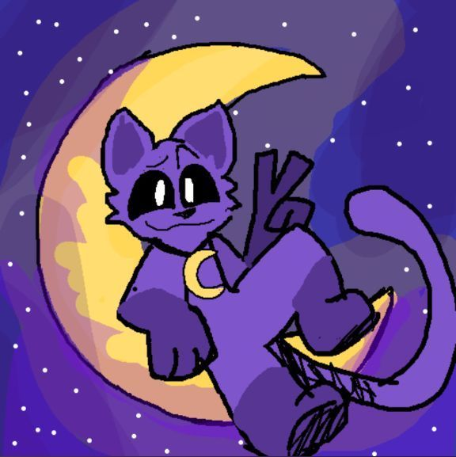
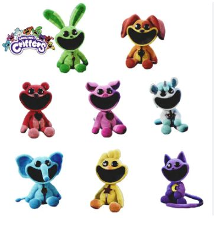
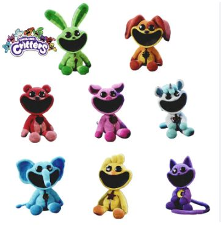
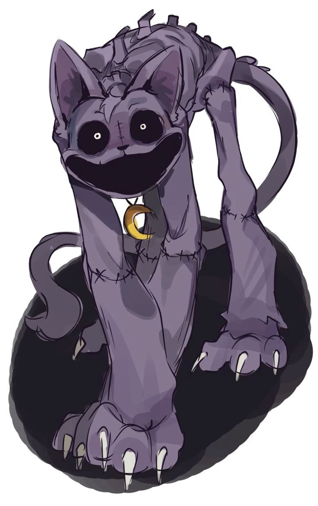

Operamac
Los smiling critters
Smiling Critters son una lujosa línea de varios animales con grandes bocas abiertas y sonrientes, y aparecerán en Capítulo 3: Deep Sleep.
Según su descripción en Twitter/X, DogDay es un personaje heroico y el líder de confianza del grupo Smiling Critters. Como muestra su colgante, DogDay tiene un comportamiento alegre, siempre mirando el lado positivo de las cosas y animando a los demás en su momento de necesidad.
A través de su letra sencilla y pegajosa, transmite un mensaje claro: sonreír cada día, sin importar las adversidades. La repetición de 'S-m-i-l-e everyday! ' funciona como un mantra que invita a los oyentes a adoptar una actitud optimista frente a la vida.
Este ingenioso y poco convencional programa, que sigue el día a día de dos empleados de una empresa dedicada a hacer sonreír a la gente, se estrenó en enero de 2022. La primera temporada está disponible en Max, con doblaje y subtítulos, además de contar con emisiones en el canal Adult Swim Latinoamérica.
8 episodios. Sigue las vivencias de los empleados de una empresa que se dedica a hacer felices a los demás, en un bizarro pero colorido mundo.
Cada episodio tiene un promedio de 22 minutos de duración, con un intervalo de tiempo de 3' minutos, aunque algunos episodios en la temporada siete fueron producidos con una gran duración, de 40 minutos para competir con la serie Survivor.
 

DogDay

DogDay es un juguete producido por Playtime Co. que debuta como un antagonista menor en el Capítulo 3: Sueño Profundo.
DogDay es el líder proclamado de los Smiling Critters, que más tarde se mantuvieron después de ser transferidos como
un experimento para la Iniciativa de Cuerpos Más Grandes.
<>
CatNap

CatNap, diseñado específicamente para proteger la animada atracción Hogar Dulce Hogar en el Playcare, fue creado para contrarrestar
los actos traviesos de Thomas Grambell, un niño manipulado por su amigo "imaginario" para sabotear a Playtime Co.
Kickin Chicken

Personalidad. Según su descripción de Twitter, Kickin Chicken es representado como el "niño genial" del equipo de Smiling Critters.
Valora mucho esta representación de sí mismo, por lo que mantiene su imagen en todo lo que hace.
CraftyCorn

CraftyCorn es un unicornio antropomórfico con piel blanca, ojos negros, orejas de caballo y un cuerno en espiral plateado que
sobresale del centro de su cabeza.
Bobby BearHug

Bobby BearHug es un juguete producido por Playtime Co. que debutará en Capítulo 3: Deep Sleep. Ella supuestamente reside en
Playcare con el resto de la alineación de Smiling Critters.
Picky Piggy

Picky Piggy es un cerda antropomórfica con piel de color rosa claro, ojos negros, cola rizada, hocico superior en forma de
media luna y orejas curvadas hacia adentro.
EL FIN